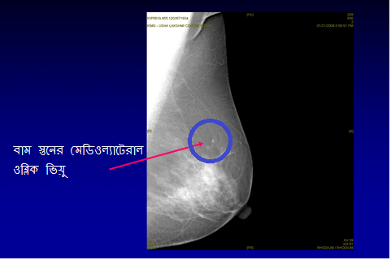

ম্য়মোগ্রাম কি?
একটি ম্য়মোগ্রাম(স্তনের এক্স-রে) কারো উপর করা হয় যখন তিনি স্তনে কোন স্ফীতি/সম্প্রতিক পরিবর্তন লক্ষ করেন | বিশেষজ্ঞের দ্বারা চিকিত্সাগত স্তন পরিক্ষা, ম্য়ামোগ্রাম এবং স্তনের আল্ট্রাসাউণ্ড এর সমিশ্রণ, স্তনে কোন সমস্য়া সনাক্ত করা/বাতিক করার ক্ষেত্রে সাহায্য় করে |
ডাক্তার...আমি কোন স্ফীতি অনুভব করতে পারছি না | আমার ম্য়ামোগ্রামের কি দরকার?
স্ক্রীনিং ম্য়ামোগ্রাম কি?
ম্য়মোগ্রাম(স্তনের এক্স-রে) স্তনে অতি সূক্ষ্ম অবস্থায় কর্কট রোগ নির্ণয় করার জন্য় করান হয় যখন মহিলা বা ডাক্তার কেওই স্তনে স্ফীতি অবুভব করতে পারেন না. ৪০ বছর বয়সের পর প্রতি বছরে একবার স্ক্রীনিং ম্য়ামোগ্রাম করিয়ে নেওয়ার পরামর্শ দেওয়া হয় |
ম্য়ামোগ্রাফি(স্তনের এক্স-রে)র মাধ্য়মে স্তনের স্ক্রীনিং গোড়ার দিকে দেখা দেওয়ার অনেক বছর আগেই কর্কট রোগ সনাক্ত করার একটি কার্যকারী প্রমানীত উপায় | প্রথমিক স্থরে কর্কট রোগ সক্তকরণ সফল চিকিত্সার একটি শ্রেষ্ঠ সুযোগ প্রদান করে যা উল্লেখযোগ্য়ভাবে বেঁচে থাকার সম্ভাবনাকে প্রদর্শিত করে |




স্তন কর্কট রোগ স্ক্রীনিং করা সমস্ত বয়সেই কি কার্যকর?
যদিও সব বয়সেরই মহিলাদের ’স্তন সচেতন’ থাকা গুরুত্বপূর্ণ, স্তনের স্ক্রীনিং কেবল ৪০ বছরের উর্দ্ধ মহিলাদের ক্ষেত্রে কার্যকর হয় | ৪০ বছরের কম বয়সী মহিলাদের কোন লক্ষণ ছাড়াই নিয়মিত স্তন স্ক্রীনিং এখন পর্য্য়ন্ত কার্যকর হিসাবে প্রমানীত হয়নি |
ম্য়ানোগ্রাম করান নিরাপদ কি? এর কোন বিকিরণগত বিপদ হতে পারে কি?
প্রকৄতপক্ষে ম্য়ামোগ্রাম করান খুব নিরাপদ | ম্য়ামোগ্রাফীতে বিকিরণের একটি ক্ষুদ্র মাত্রা প্রয়োগ হয় -এর থেকে বিপদের ঝুঁকি অতি তুচ্ছ | ম্য়ামোগ্রাফী করার সময় বিকিরণের মাত্রা দাঁতের এক্স-রে সম মাত্রার হয়ে থাকে |
ম্য়ামোগ্রাফী কি কাষ্টদায়ক?
প্রকৃতপক্ষে ম্য়ামোগ্রাফীতে তাত্ক্ষনিক ভাবে অস্বস্থি হতে পারে, এটি কষ্টকর হওযা উচিত না যদি তা একজন ভাল প্রশিক্ষণপ্রাপ্ত রেডিওগ্রাফারের কাছে করা হয় | ডিজিতাল ম্য়ামোগ্রাফীতে, অস্বস্থি আরো কম হয়ে থাকে |
পারম্পরিক ম্য়ামোগ্রাফী এবং ডিজিটাল ম্য়ামোগ্রাফী’র মধ্য়ে পার্থক্য় কি রয়েছে?
সম্পূর্ণ তরল ডিজিটাল ম্য়ামোগ্রাফী(Full Field Digital mammography) হচ্ছে সাম্প্রতিক বিবর্তনকারী অগ্রগতি যাতে স্তনের একটি ছবি ৫ সেকেণ্ডের মধ্য়ে প্রস্তুত করা যেতে পারে(চিরচরিত ম্য়ামোগ্রাফির চার থেকে পাঁচ মিনিট সময়ের তুলনায়) | ম্য়ামোগ্রাফির এই নতুন কৌশল প্রারম্ভিক সূক্ষ কর্কট রোগ জনিত পরিবর্তন দেখানোর জন্য় সাধারণ মানের ম্য়ামোগ্রাফির থেকে বেশি কার্যকর এবং ঘন স্তনধারি অল্পবয়সি মহিলাদের জন্য় বিশেষভাবে দরকার হয় | চিরাচরিত ম্য়ামোগ্রাফীর তুলোনায় এর অন্য়ান্য় সুবিধাগুলির মধ্য়ে আরো কম অস্বস্থি এবং বিকিরণের সামনে অতি সামান্য় এক্সপোজার ও উপরে বলা হয়ে থাকার মত আরো বেশী নির্ভুলতা রয়েছে |
এছাড়াও, টেলিমেডিসিন সুবিধার উপলব্ধতার কারণে, ডিজিটাল চিত্রগুলি বিশ্বের যেকোন প্রান্তে কয়েক সেকেণ্ডের মধ্য়ে পাঠান যেতে পারে | যেহেতু এই মেশিনটি খুব দামি, পূরো মাত্রায় ডিজিটাল ম্য়ামোগ্রাফ্য় আমাদের ভারতে ব্য়পকভাবে উপলব্ধ নয় |
ম্য়ামগ্রাফী কি স্তন কর্কট রোগ সনাক্ত করার ক্ষেত্রে ১০০% নির্ভুল হয়?
প্রাথমিক স্থরে স্তন কর্কট রোগ সনাক্ত করার ক্ষেত্রে ম্য়ামোগ্রাফী সবথেকে কার্যকর উপায় | অন্য়ান্য় স্ক্রীনিং পরিক্ষার মত তারাও নির্ভুল না | ম্য়ামোগ্রাফী করার সঠিকতা ৮৫% র আসেপাসে হয় | কারণগুলি হলো:
স্তনে এমআরআই (MRI) এর ভূমীকা কি?
নিয়মিত স্তন স্ক্রীনিংএর সময় বা স্তন কর্কট রোগ সহ প্রত্য়েক রোগীর ক্ষেত্রে স্তন এমআরআই (MRI) সুপারিশ করা হয় না |
যদিও কিছু অবস্থার অধীনে এটি অত্য়ন্ত আবশ্য়ক হয় |